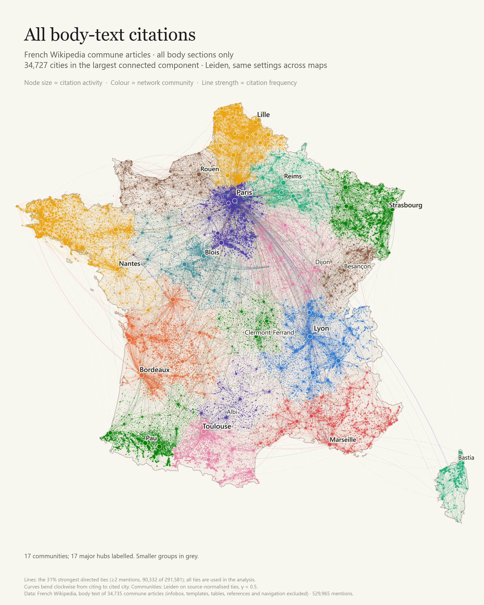
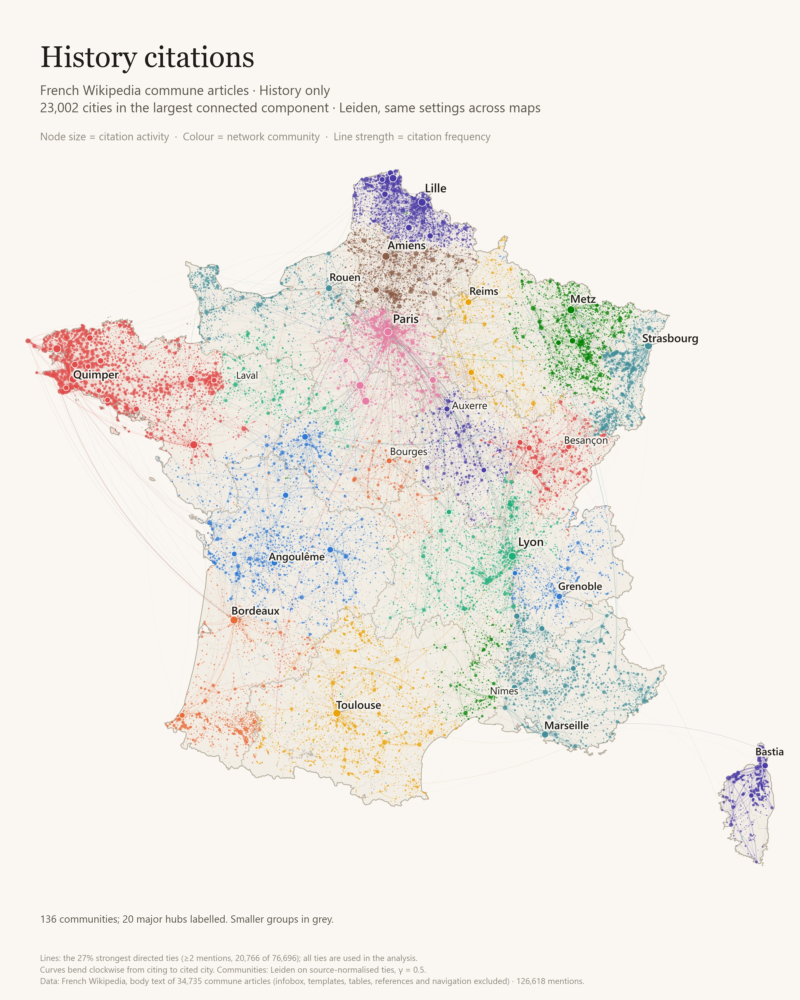
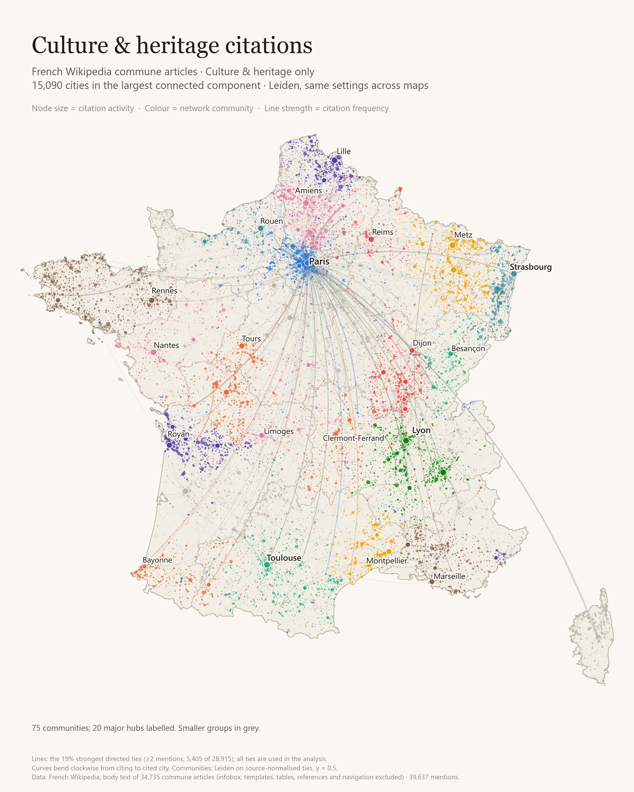
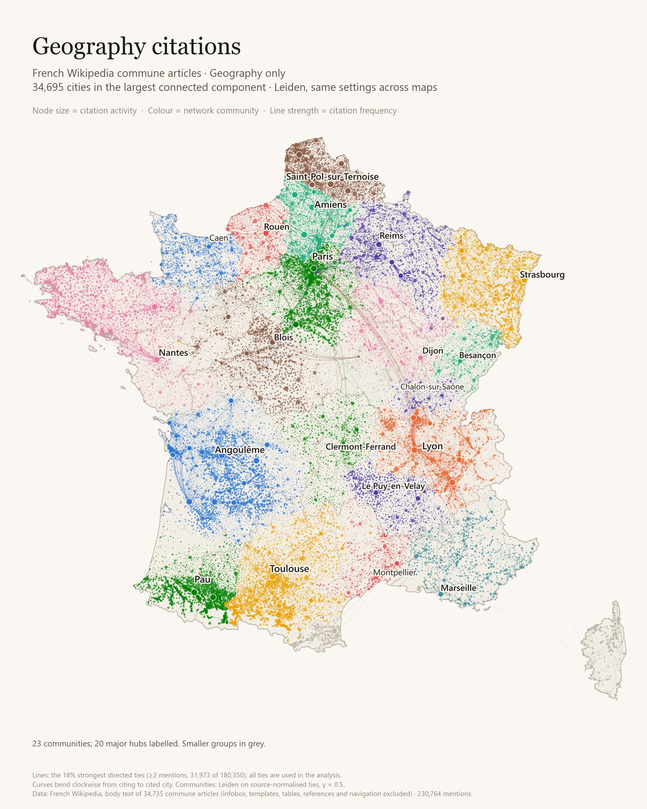
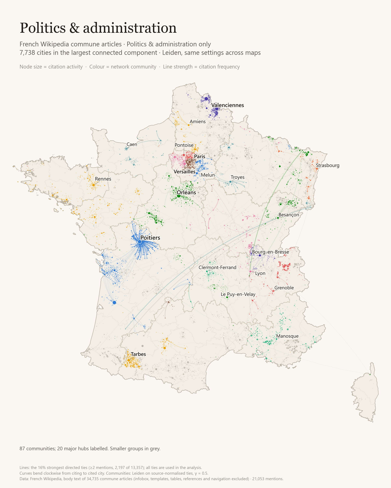

WIKIPEDIA · METROPOLITAN FRANCE · LOCAL CORPUS
Five views of France's citation network
The same map template, five article contexts: where communes mention one another, and how the pattern changes by topic.
What the maps show
- Across the corpus, 529,965 inter-commune mentions connect 34,727 cities. The median mention spans 9.7 km; 87.8% span less than 50 km.
- History has 126,618 mentions with a 11.8 km median; culture and heritage has 39,637 with a 11.4 km median. Their largest components cover 96.6% and 88.7% of active cities, respectively.
- Geography's median is 8.6 km and administration's is 9.8 km. The five independently fitted networks yield 17, 136, 75, 23, 87 communities, in table order; network density and connectivity also affect those counts.
- Paris is an endpoint of 1.7% of all mentions, 1.8% in history and 4.6% in culture. This measures textual prominence, not a city's real-world importance.
| Layer | Mentions | Active cities | City coverage* | Mention coverage* | Groups | Median km | Links-only km | Seed ARI |
|---|---|---|---|---|---|---|---|---|
| All body-text citations | 529,965 | 34,727 | 100.0% | 100.0% | 17 | 9.7 | 10.1 | 0.731 |
| History citations | 126,618 | 23,822 | 96.6% | 99.5% | 136 | 11.8 | 12.9 | 0.749 |
| Culture & heritage citations | 39,637 | 17,005 | 88.7% | 96.6% | 75 | 11.4 | 12.3 | 0.884 |
| Geography citations | 230,764 | 34,697 | 100.0% | 100.0% | 23 | 8.6 | 8.8 | 0.753 |
| Politics & administration | 21,053 | 10,677 | 72.5% | 84.1% | 87 | 9.8 | 9.6 | 0.933 |
*Largest-component share of all active cities / all mentions. Counts and distances use all components; groups use the largest component.
The five maps
Click a map for its 2400 × 3000 PNG. Colours and point-size scales are local to each map. All maps use the same minimum of two mentions for drawn lines; every positive tie is used in clustering.
All body-text citations

History citations

Culture & heritage citations

Geography citations

Politics & administration

Method and limits
Corpus: the highest locally stored revision ID for each article, not a live or synchronized Wikipedia snapshot. Commune IDs come from article INSEE codes validated against cached official reference data; delegated/associated communes in COG 2025 are folded into their parent. Non-communes, overseas communes and self-citations are removed. Coordinates use an infobox town centre when within 20 km of the official centre, otherwise the official centre.
A citation is a resolved commune wikilink plus plain-text repeats of that name, anchored by at least one link anywhere in the article. Ambiguous names, short names, a stoplist and names contained in the source name are excluded from plain-text matching. Infoboxes, all templates, tables, images, references, comments and end matter are stripped. This excludes formal reference citations: the network measures mentions of places.
Topics use normalized level-2 headings and a documented ordered keyword list; first match wins and subsections inherit their parent topic. Culture includes heritage, monuments, sport, tourism and local life; Personalities is separate. Unmatched sections remain Other. Topic maps are overlapping subsets of the overall network, not an exhaustive five-way partition. The section inventory lists every heading and its assignment.
For each layer, aggregate w_ij = link counts + plain-text counts, then normalize p_ij = w_ij / sum_j(w_ij). Cluster the undirected projection p_ij + p_ji using Leiden RBConfigurationVertexPartition. Use fixed gamma = 0.5 for all five maps, five seeds 20261002–20261006, iterations until no improvement, and retain the highest objective. Gamma follows the earlier overall-map setting and is not reselected for each topic. Stability is mean pairwise adjusted Rand index across the ten seed pairs; Q is conventional weighted modularity at gamma = 1, for description.
Each layer is clustered and drawn on its largest weakly connected component. Active cities and citation counts in the table include all components; coverage columns disclose exclusions. Maps show ties with at least two mentions (or the maximum if none reach two), but clustering uses every positive tie in that component. Point sizes and line widths are scaled within each map; compare numeric totals before comparing visual density. Colours are assigned independently to each map and may repeat. They do not identify the same community across maps. Up to 20 communities of at least 50 cities are labelled by their most-cited city; other communities are grey. The overall territories view reuses the exact overall-map memberships and colours; it fits no new clusters. Hulls show contiguous pockets of at least 12 cities using Delaunay neighbours within 30 km, with a 3.5 km buffer. Smaller pockets remain dots, so filled areas do not show every member city. These are visual envelopes, not borders.
Distance is the great-circle distance between commune coordinates, weighted by mention count. The links-only median is a sensitivity check for ambiguous plain-text mentions. Templated prose can survive template removal; locality may reflect editorial conventions, administrative wording or geography. These are descriptive article relationships, not evidence of travel, influence or causal historical relationships. ARI between topics is calculated only on their shared clustered cities and is descriptive; no significance tests are claimed.
Leiden reference: Traag, Waltman & van Eck (2019), From Louvain to Leiden, Scientific Reports 9, 5233, doi:10.1038/s41598-019-41695-z. Department outlines: france-geojson, simplified IGN Admin Express 2018 under Licence Ouverte; retrieved 3 October 2026. Label offsets are bounded to 35 km with leader lines; markers always remain at their original coordinates.
Section-to-topic inventory · Shared-city partition comparisons · Full numbers and input hashes
Algorithm: leidenalg reference; Traag, Waltman & van Eck (2019), From Louvain to Leiden. Reference data: cached geo.api.gouv.fr, INSEE COG 2025, and france-geojson department outlines.